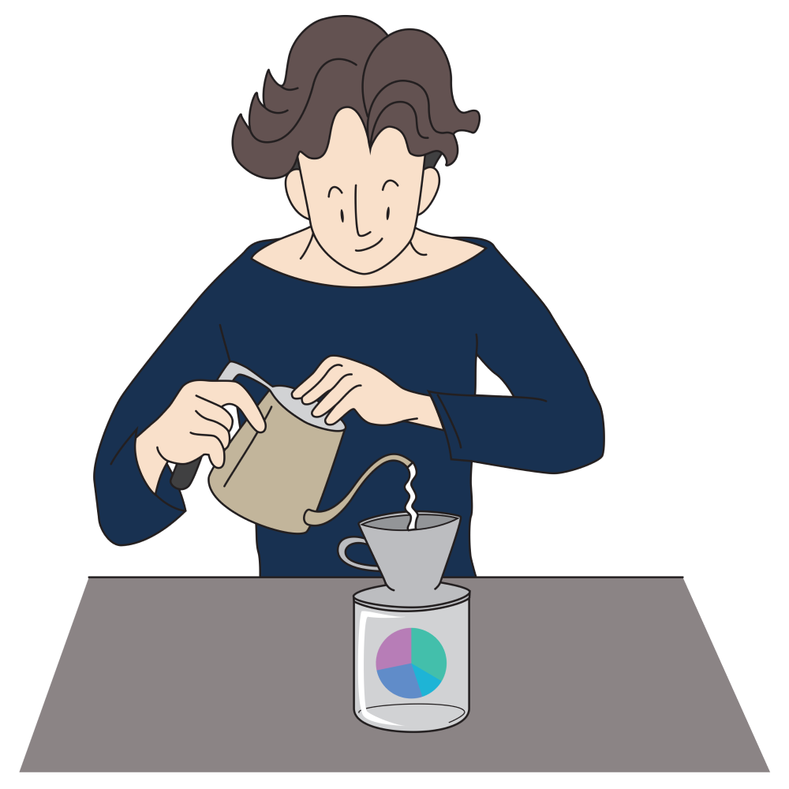

What is Brew-A-Port?
Brew-A-Port helps explore portfolio ideas and plan long-term investment.
From determining monthly savings, testing portfolios,
rebalancing portfolios to maximizing tax saving,
check out various tools from the top menu.
Follow us for feature updates or contact us on